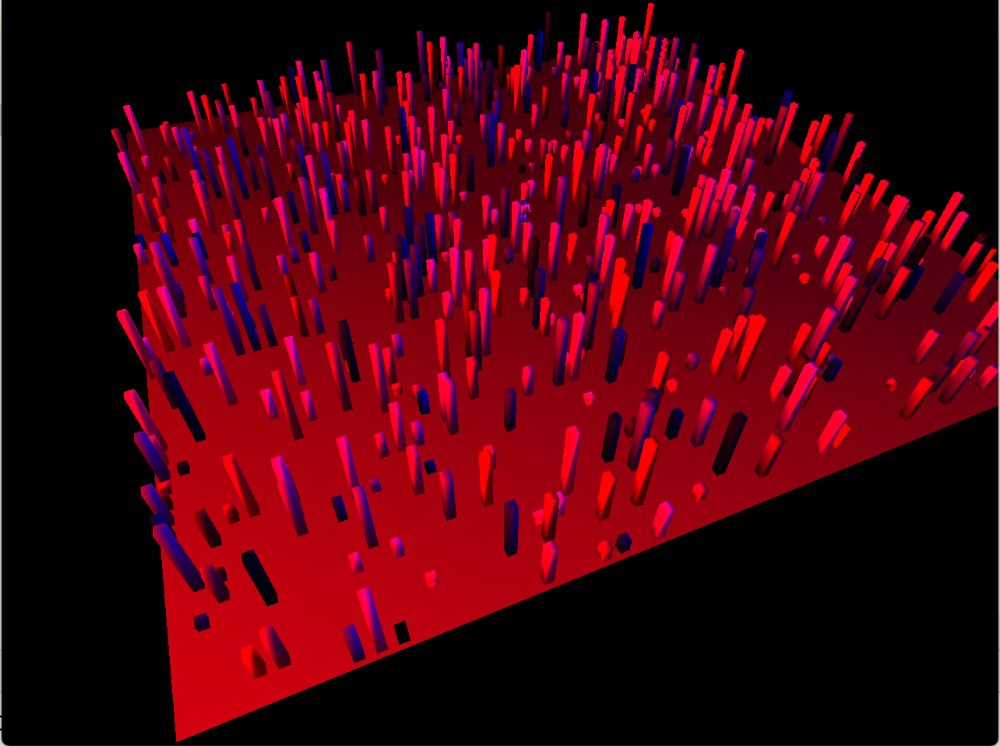
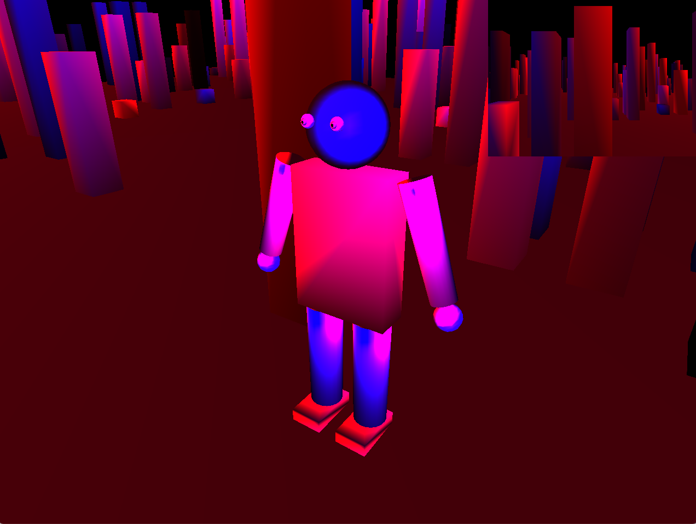

CSCI 441 - Computer GraphicsFall 2020 |
|
| | Home | Assignments | Leaderboard | Schedule | Resources | | |
"Aethon Misty"A1 - In which I wrote my hero's name using gl primitives and transformations, and created a crest of a sword and hammer. A2 - Creates a character that can be moved around the screen (and between different backgrounds) with both the ASWD keys and the arrow keys, with idle head animation. If you just click your mouse within the character's torso, the character's expression will change, their eyes follow the cursor, and if you click the mouse and the control button at the same time the character will flap their arms. A3 - Populates a 3D environment with buildings of varying size and color and my 3D character model. The character can move forward or backward with the W and S keys, or turn side to side with the A and D keys. Everything in the scene can view from an arcball camera centered around the character, or with the FPOV camera (which is a freecam) which is displayed in the upper right hand corner of the screen. The main camera (the arcball) can change it position around the character by the user dragging their mouse, similar to the flight simulator, and zooming in by pressing the control key and clicking and dragging the mouse. 
MP - In this program we have 4 separate characters and 2 scene objects, all shaded using the Gourad Shading and the Phong Illumination Model and lit using a directional light, a spot light, and a point light. You can view each individual character with an arcball camera centered around them (which is centered can be changed using keys 1,2,3, & 4) as well as a first person point of view in the upper right hand corner (toggled on and off with the 9 key). You can also switch from the arc ball camera to a free cam using the 8 key, and you can turn off the light types using keys 5,6, & 7 (5 - directional, 6 - spot, 7 - point). You can move whichever character is selected using WASD when the arcball camera is selected, or you can fly the free camera using the mouse and the WS keys. You can also zoom into the character when on the arcball camera by holding the CTRL key and dragging the mouse.   A4 - 3D environment with buildings and my character model, which can be moved using the WASD keys. Scene is viewable with an arcball camera, freecam, and fpov camera. Arcball is centered around the character model, the freecam is an aerial camera which can be switched to using the 8 key, and the FPOV camera is in the upper right hand corner of the display and turned on using 9 key. Scene is lit with a red and blue point light, all objects have diffuse, specular, and ambient lighting applied to them. A5 - Using A4 as a base, the scene is now within a skybox, has a directional lighting option to allow for easier lighting. And there is now a mascot that orbits the character or dances in a figure 8 about the character. You can use the 1 key to turn on the spotlights, the 2 key to turn on the directional light, the 8 key to switch to the free cam, the 9 key to turn on the FPOV camera, the P key to toggle the points of the mascot's path on and off, and the C to toggle the path of the mascot on and off (and any other keys that were implemented in A4). Finally, the mascot is animated with its "ears" flying in and out of its head (and it is definitely not like Mickey Mouse, its a completely different color scheme!). A6 - Using A5 as a base, without the buildings, there is now a particle system that is emulating a fountain of sparks. All hotkeys from A5 are still applicable, and now if you press M you will reset the fountain source to the character's current position (when the key is pressed). FP - The player's goal is to reach the end of the grid without running into any of the enemies. If they collide they will be sent back to the start of the level. If they win by making it past the last enemy, they map will turn green. There is a particle system. With Snow falling, which each particle is uniquely distorted (cause no two snowflakes are alike). The enemies glow red the closer they get to the player. A7 - This program builds on A6, re-adding in the buildings which are now collidable objects, as well as 25 enemies that flock to the character (using a particle system), and 4 gold coins you need to collect to win. If you collect all 4 coins, you win, but if you get hit by any enemy 10 times you lose. Additionally, if you go beyond the ground your character will fall to their death and you will lose. | |